Potato
Egg, cheese, a la mexicana, beans, bacon, chorizo, or ham. Mix what you want.
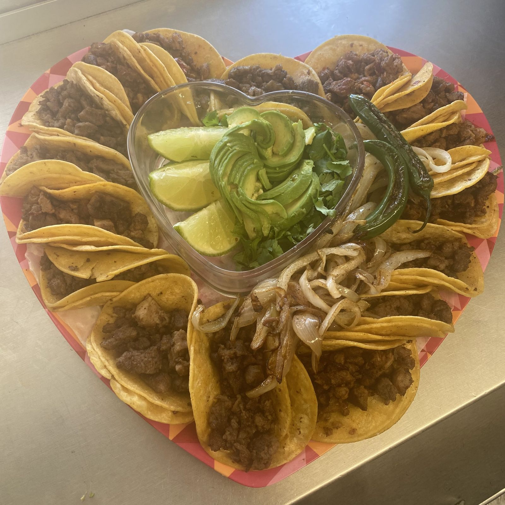
Authentic Mexican restaurant in Nixon, Texas
From Nixon’s favorite morning breakfast tacos to heavy lunch plates, we serve the real taste of Mexico right here on Central Ave.
Homemade style Family kitchen since 2016
Call-ahead pickup Drive-through on Central Ave
Cash only Have it ready at the window
From this kitchen
Handmade Mexican food near Gonzales County — these photos are from Taqueria La Guadalupana on E Central Ave.
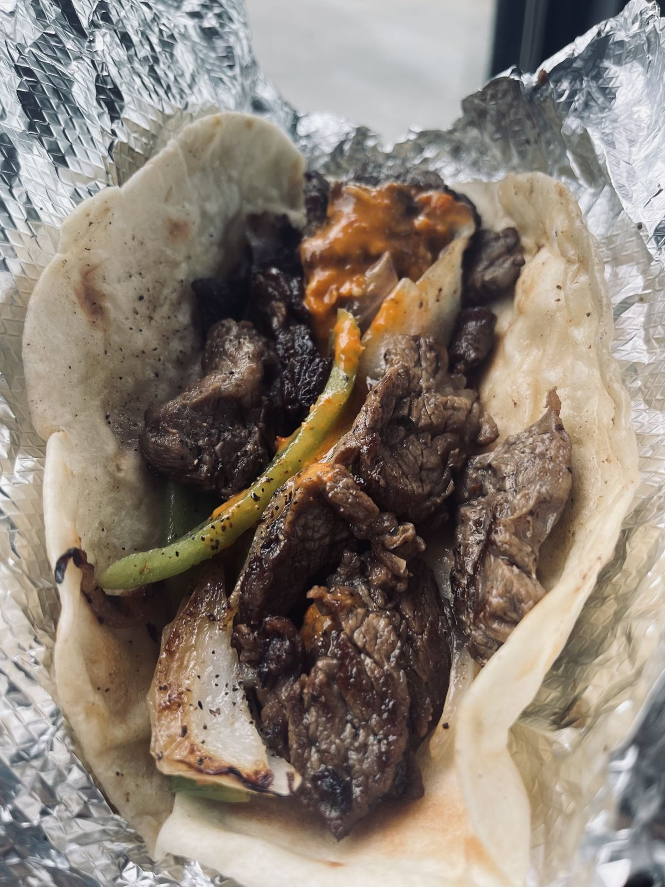
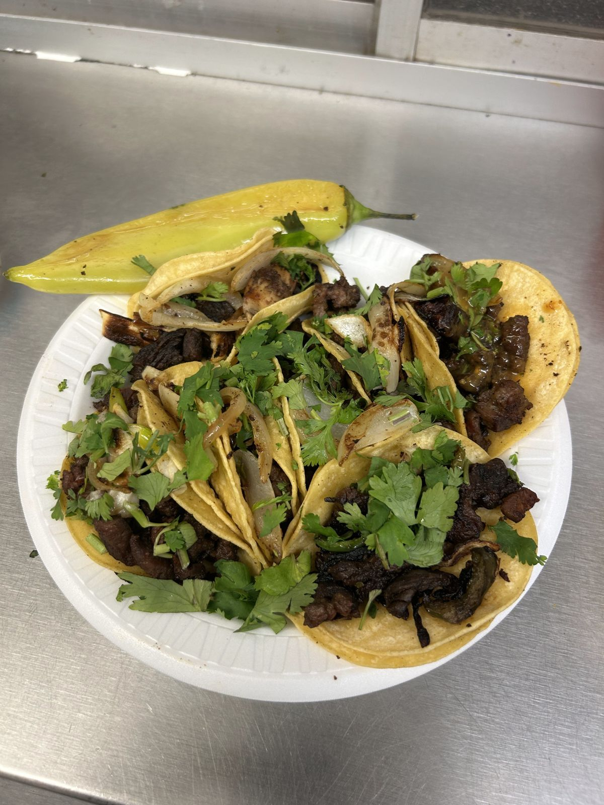
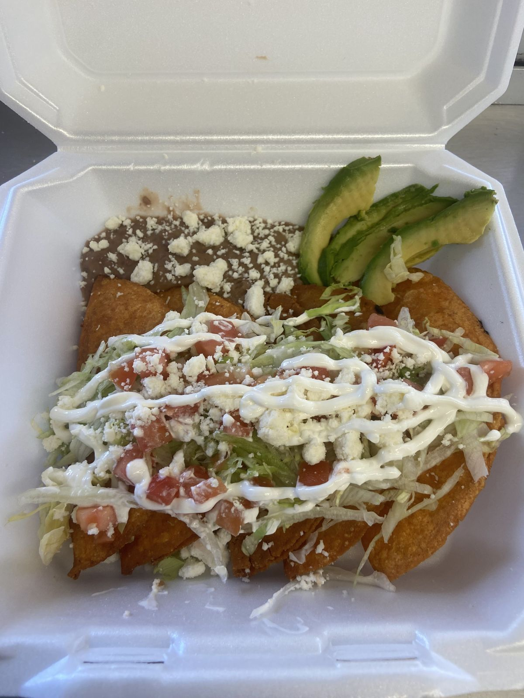
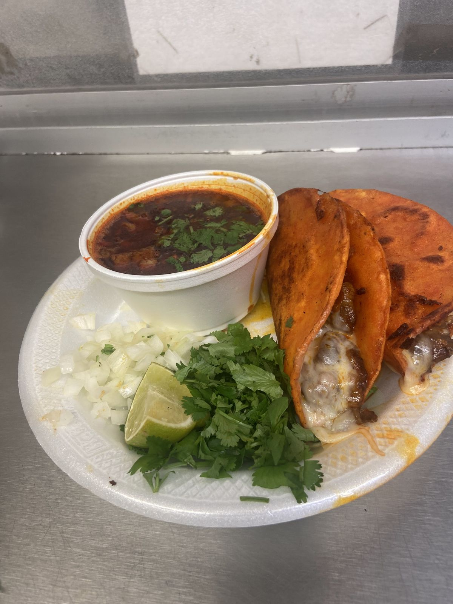
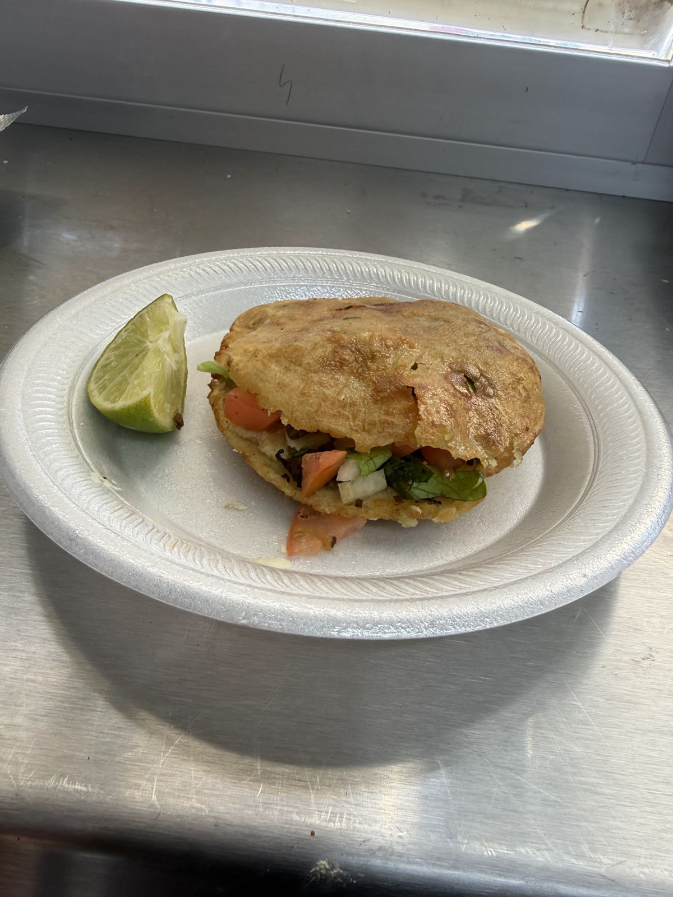
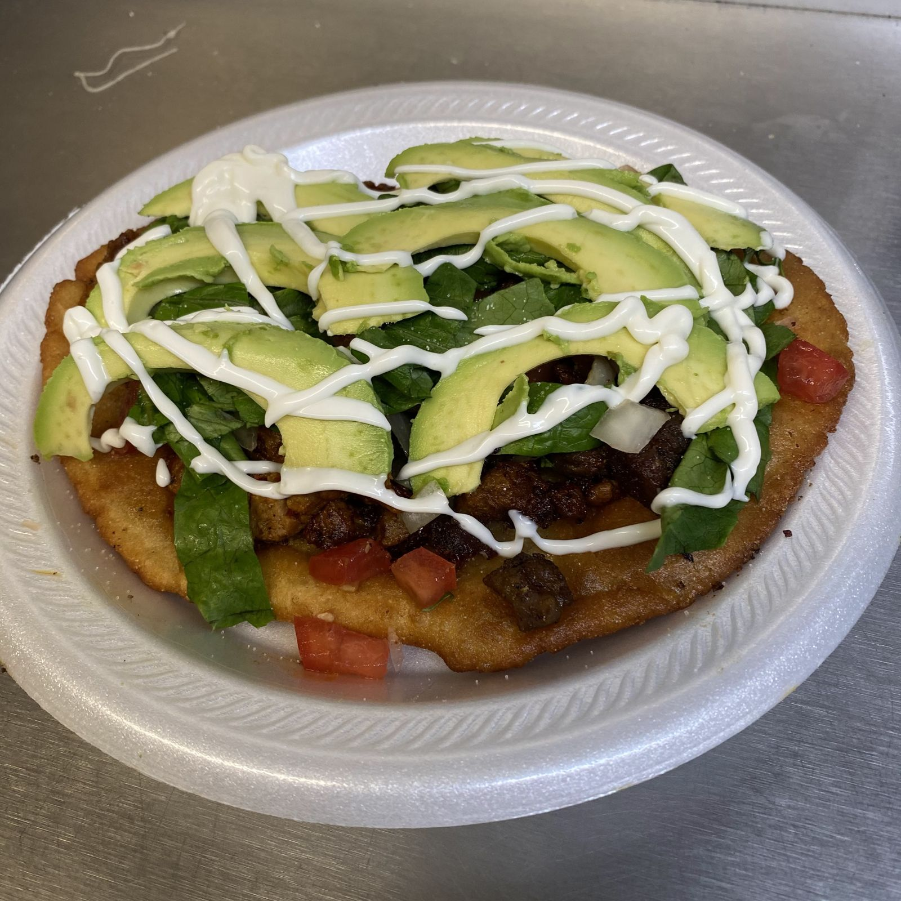
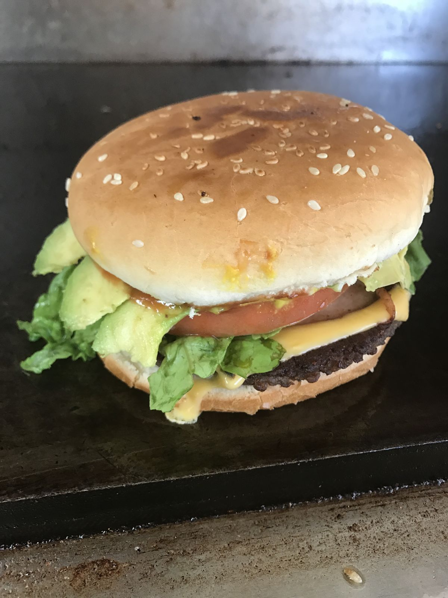
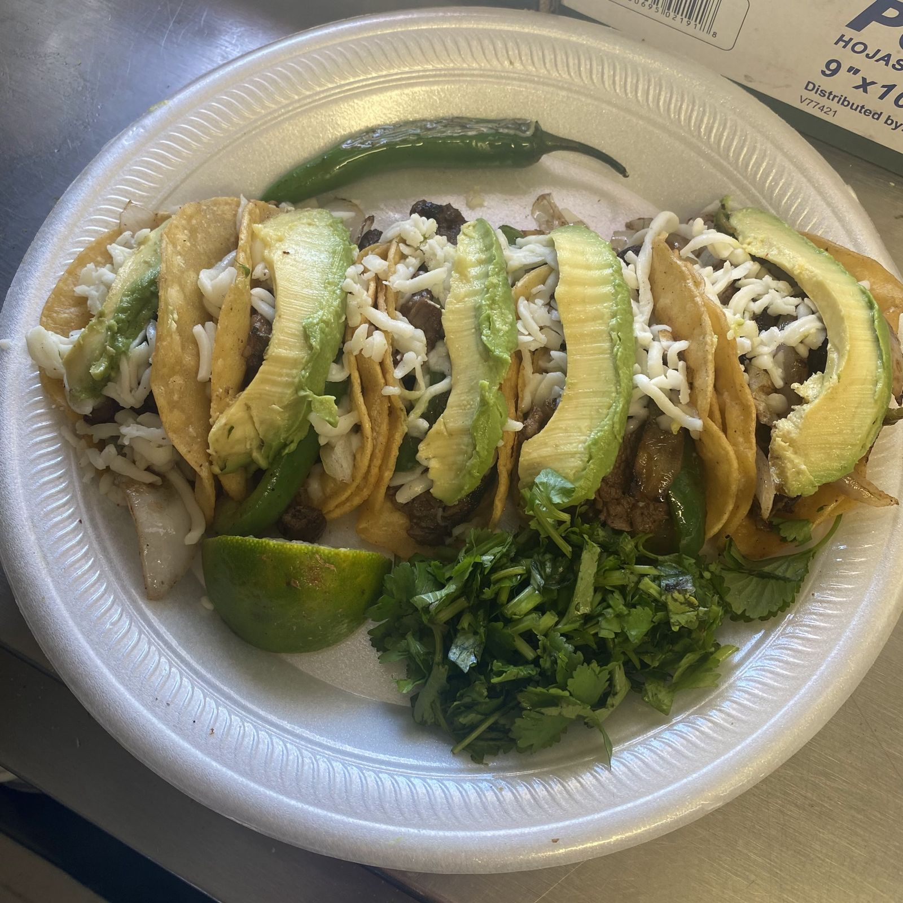
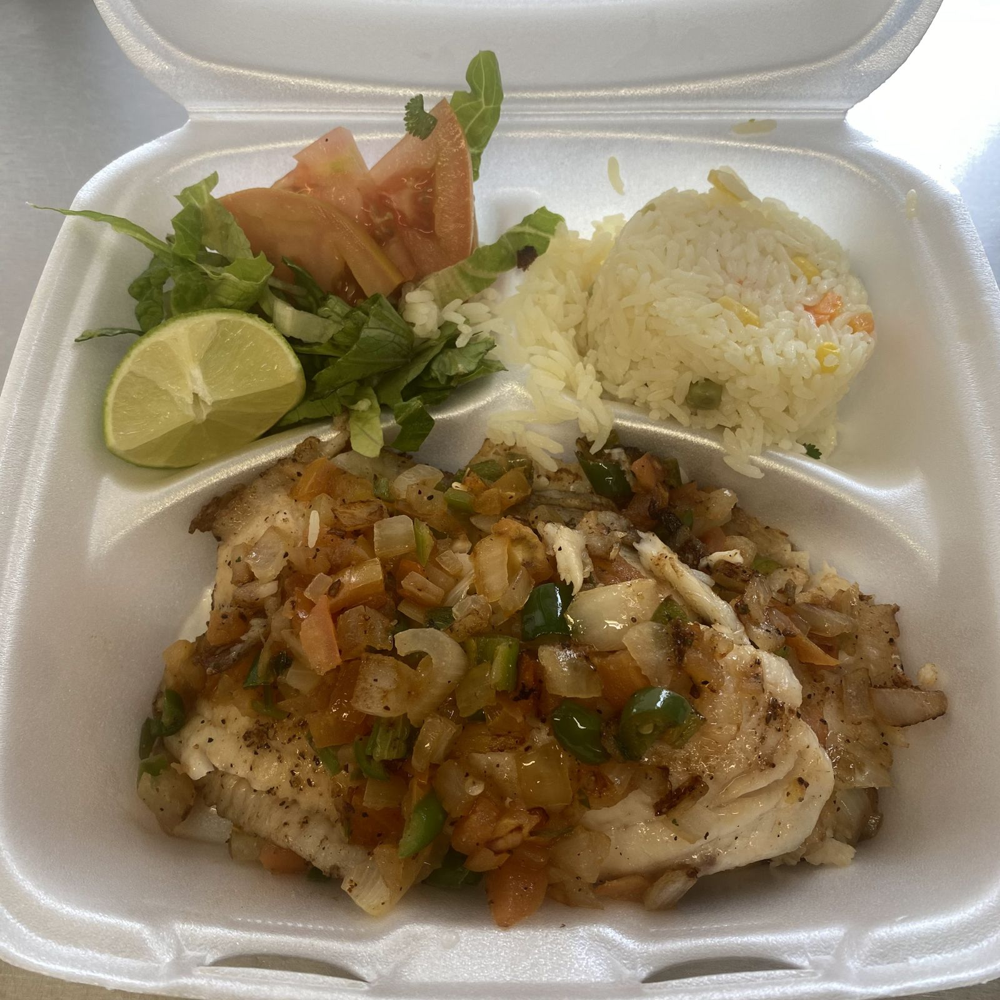
“BEST TACOS IN THE ENTIRE AREA. BETTER THAN DONUTS” Salvador Rivera · Jan 2024
Visit
Nixon, TX 78140
Drive-through · picnic tables under the shed · cash only. Call ahead so the order is ready at the window.
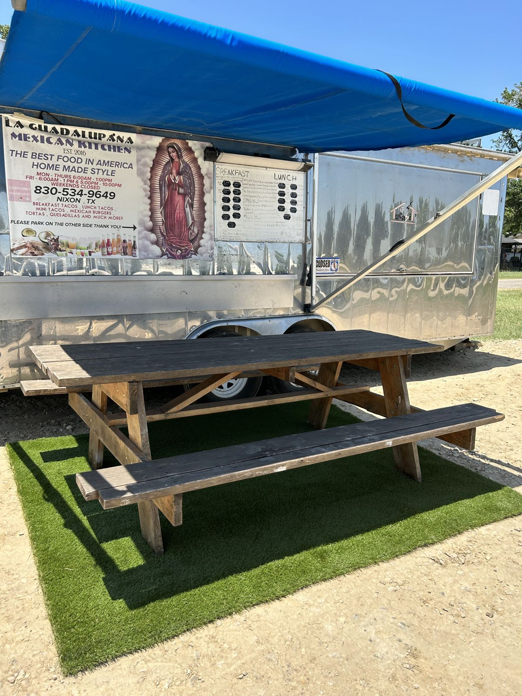
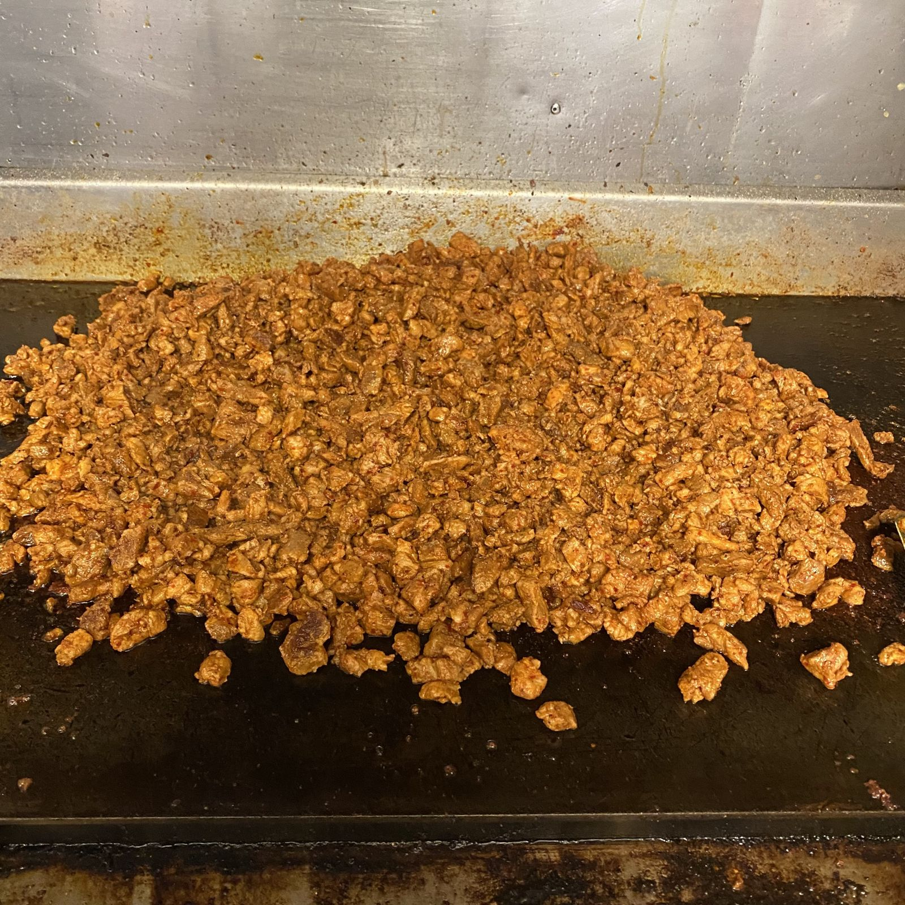